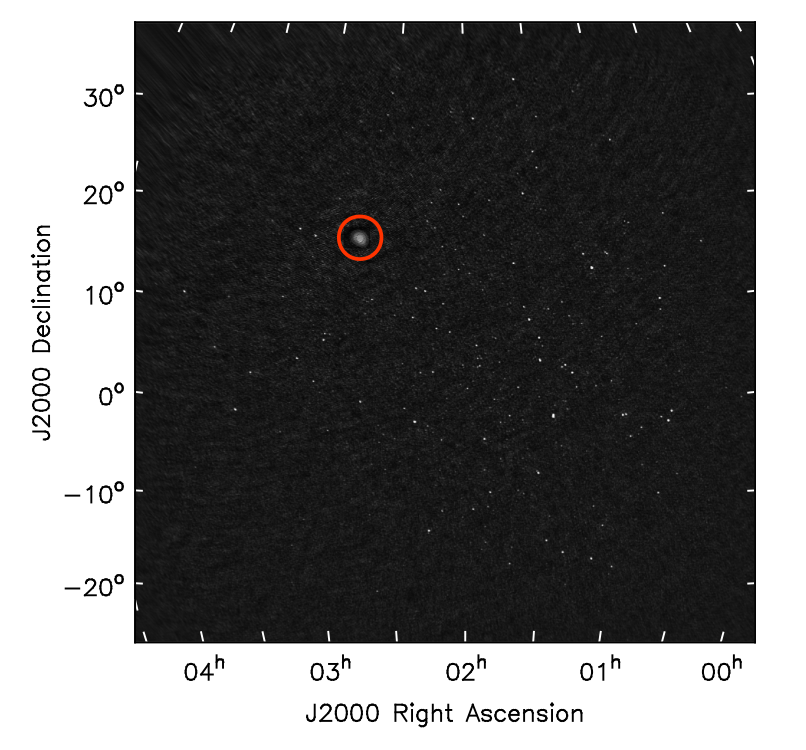

Precise Measurement of Flux Density of Radio Emissions from the Sun using Day-time Celestial Radio Sources
During astronomical observation, astronomers measure the amount of energy emitted by astronomical objects. This energy is generally measured in terms of the flux density of the source. At radio frequencies, these measurements are calibrated using calibrator sources, which have known constant flux densities. Since the Sun is about 1000 times brighter at radio frequencies than the calibrator sources, estimating the flux density of the solar radio emission is challenging. With the new generation radio telescope, the Murchison Widefield Array, it is now possible to observe the faint background radio sources simultaneously with the Sun. This is the first such an observation has been made, which seems like “observing stars in the day”. Using these background radio sources it is now possible to estimate the flux density of the solar radio emission with much better accuracy, which is important to understand the emission mechanisms of solar radio emissions.
Introduction
In most physics experiments, researchers measure various quantities in different units, like the mass of a body measured in grams, the length of an object measured in centimeters, and so on. Similarly, Astronomers also measure different quantities during astronomy observations, which can be used to understand the physical properties of that astronomical object. In astronomy, measurements are done in some well-defined units, like any other area of physics. One such important quantity in astronomy is the flux density, which defines the amount of energy received per unit of time from astronomical sources if collected over a unit area and unit solid angle for a monochromatic emission. At radio wavelengths, the unit of this flux density is Jansky (Jy), named after the pioneer of radio astronomy, Karl. J. Jansky.
When an astronomer observes the radio emission from a celestial object using a radio telescope, the tiny amount of incident radio emission is converted into electronic voltages by the very sensitive electronic instruments of the radio telescope. The corresponding power generated by these very tiny voltages is recorded in some arbitrary units. But, to understand the physical processes happening on that celestial object, astronomers need to convert this measured power into the units of Jy. The process to convert this is known as flux density calibration. Precise measurement of the flux density in units of Jy is essential to properly measure other physical properties, like distance, size, temperature, and so on, of that astronomical source.
This process is routinely done using a bright radio source with a well-pre-defined flux density. These are called calibrator sources. While observing the Sun at radio wavelengths, this standard approach does not work. The flux density of the Sun is about 1000 times more than the brightest celestial radio source in the sky. Like at the optical wavelengths, it is tough to observe the background sources in the sky at radio wavelengths when the Sun is in the sky. Hence, to obtain the flux density of the Sun at radio wavelengths, solar physicists have used different laboratory measurements of the properties of the instrument to estimate the flux density of solar radio emission. But those estimations had comparatively large errors in the flux density.
Observing Stars in the Day

Fig. 1 : An image of the daytime sky at radio frequency (80 MHz). The image is made from the observations taken with the instrument called the Murchison Widefield Array, which can observe a large, about 2500 square degrees of the sky at a time. The red circle in the image marks the Sun. All small white dots in the image are background sources emitting radio frequencies, including stars, galaxies, quasars, pulsars, and others.
For precise flux density calibration of solar observation, several background radio sources with well-known flux densities must be observed during the daytime. This is extremely challenging.
Despite great challenges, a team of solar physicists from NCRA, led by Devojyoti Kansabanik, have successfully observed more than 80 background radio sources with the Sun in the field of view (FOV) of the telescope using images having a dynamic range of 1000. The dynamic range is the ratio between the brightest and faintest emission detected in the image. They used one of the most advanced telescopes in the world, the Murchison Widefield Array (MWA), situated in the western Australian desert, to make this high dynamic range image. This image is shown in Figure 1. A red circle marks the Sun, and all other small white dots are the radio emissions from background stars, galaxies, and other celestial bodies. They detected more than 80 sources with the Sun in the sky. This is the first time such an image of a daytime sky is made, which seems like observing stars in the day.
Precise Measurement of Flux Density of the Radio Sun
Kansabanik et al. use these background radio sources to estimate the flux density of the radio Sun. The known flux density of these sources is obtained from the GLEAM survey and determines a scalar number for each source to match their flux density obtained from the image with the previously known values. They have found that these scalar numbers are constant for the full image. Hence, the same scalar number can be used to obtain the true flux density of the Sun in units of Jy. This method allows them to measure solar flux density with a precision of 10 %, which is about 3 to 6 times more precise than the previous method developed by Oberoi et al. 2017. They also found that the 10% error is mostly coming from the error on the known flux densities from GLEAM of these radio sources.
Kansabanik et al. also devise a method exploiting the extreme stability of the MWA. They demonstrated that a very precise solar flux density could be obtained only using an analytical function of frequency without using any dedicated observation of flux density calibrator.
Importance for Future Observations of the Sun and Heliosphere
As said earlier, astronomers use precise flux density measurements to estimate several physical parameters of the celestial source. The radio emission from quiet solar corona or coronal mass ejections can be used to measure those media’s temperature, magnetic field, and electron properties. The estimated values of these plasma parameters strongly depend on the precision of the flux density measurements.
Besides achieving precise flux density measurement, the first-ever successful detection of a large number of faint background radio sources makes it possible to observe the heliosphere close to the Sun using a wide FOV instrument, which is otherwise impossible. These sources and their polarized emission can be used in the future to measure the magnetic field in interplanetary space. When a large amount of plasma is erupted from theSun in the form of a CME and crosses the background sources, its polarization properties get changed by the magnetic field of the CME plasma. A similar phenomenon can be observed when magnetized solar wind passes through the line of sight of these background sources. The changes in polarization properties of them can be an efficient method to measure the magnetic field in the heliosphere over a larger region, which is rather challenging and only limited to some vantage point measurements directly from a handful of spacecraft. Work is currently underway to use the polarization properties of these sources to achieve this objective.
References:
- Oberoi, D., Sharma, R. & Rogers, A.E.E. Estimating Solar Flux Density at Low Radio Frequencies Using a Sky Brightness Model. Sol Phys 292, 75 (2017). https://doi.org/10.1007/s11207-017-1096-1
Original paper: Robust Absolute Solar Flux Density Calibration for the Murchison Widefield Array
First Author: Devojyoti Kansabanik
Co-authors: Surajit Mondal, Divya Oberoi, Shilpi Bhunia, Ayan Biswas
First author’s Institution: National Centre for Radio Astrophysics, Tata Institute of Fundamental Research, Pune, India